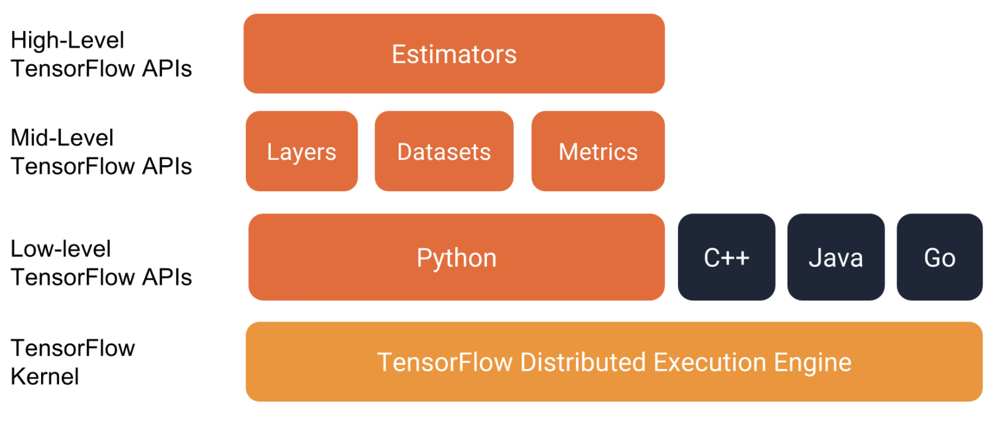
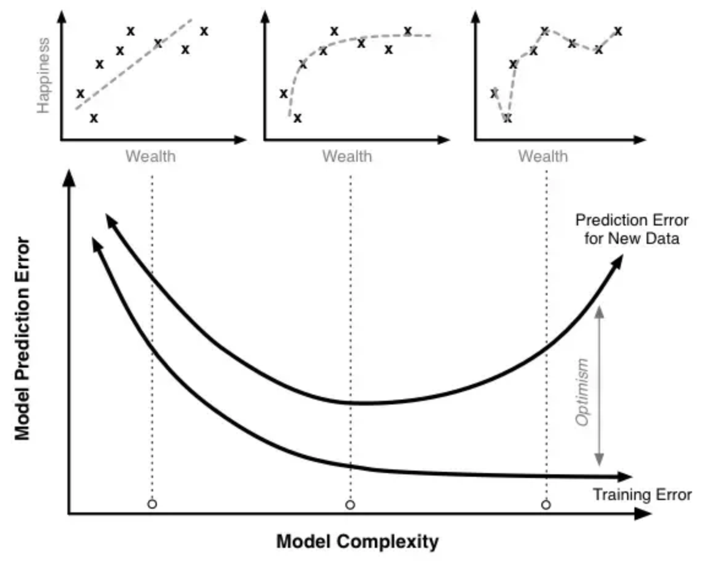

TensorFlow 简介
TensorFlow™ 是一个使用数据流图进行数值计算的开源软件库。图中的节点代表数学运算， 而图中的边则代表在这些节点之间传递的多维数组（张量）。这种灵活的架构可让您使用一个 API 将计算工作部署到桌面设备、服务器或者移动设备中的一个或多个 CPU 或 GPU。 TensorFlow 最初是由 Google 机器智能研究部门的 Google Brain 团队中的研究人员和工程师开发的，用于进行机器学习和深度神经网络研究， 但它是一个非常基础的系统，因此也可以应用于众多其他领域。
TensorFlow 结构
你可以直接在 Google 的 Colaboratory 直接运行代码，也可以在本地 tf 目录通过source bin/activate 激活 tf 环境后在 python 中运行代码。

其中 tf.estimator 抽象级别比较高，使用起来很方便但缺乏灵活性。
一份线性回归的代码如下：
1 | import tensorflow as tf |
在了解 TensorFlow 的使用之前，我们先需要了解在 TensorFlow 中数据的表现形式。TensorFlow 中数据常常用 pandas 来进行输入和处理。
Pandas
pandas 是一种列存数据分析 API。它是用于处理和分析输入数据的强大工具，很多机器学习框架都支持将 pandas 数据结构作为输入。
基本概念
- DataFrame：类似数据库表，包含行和列。
- Series：类似数据库表中的一行数据。
基本使用
导入数据
Pandas 使用起来非常简单，你可以直接初始化 Series 然后加上列名初始化一个 DataFrame：1
2
3
4city_names = pd.Series(['San Francisco', 'San Jose', 'Sacramento'])
population = pd.Series([852469, 1015785, 485199])
pd.DataFrame({ 'City name': city_names, 'Population': population })
还可以直接从 csv 文件导入数据：
1 | california_housing_dataframe = pd.read_csv("https:#storage.googleapis.com/mledu-datasets/california_housing_train.csv", sep=",") |
DataFrame 有一些实用方法：
describe()：查看数据集的总体信息。head()：查看数据集的前几条数据。
假设我们有一组这样的数据：
| City name | Population
——|—————-|—————-
0|San Francisco|852469
1|San Jose|1015785
2|Sacramento|485199
以此为例子来演示使用 Pandas 处理数据。
读数据
可以用 Python 中的 dict/list 相关方法来访问 DataFrame 的数据：
1 | city_names = pd.Series(['San Francisco', 'San Jose', 'Sacramento']) # 初始化 Series |
加工数据
看一个例子：
1 | cities['Is wide and has saint name'] = (cities['Area square miles'] > 50) & cities['City name'].apply(lambda name: name.startswith('San')) # 为 cities 增加一列，列名叫 `Is wide and has saint name`，类型是 bool，条件是面积大于 50 且 名字以 San 开头 |
由此可以看出：
- 可以直接对 Series 进行数学运算，得到的仍是 Series。
- 可以通过
apply方法转换（类似 map）Series 的内容。 - 两个 Series 也可以进行运算，得出的结果仍然是 Series。
- 可以通过下标直接将 Series 赋值到 DataFrame 中。
最终得到下面的数据：
|City name| Population|Area square miles |Population density |Is wide and has saint name
——-|———|———|————-|———|—-
0| San Francisco| 852469 |46.87 |18187.945381|False
1| San Jose |1015785 |176.53 |5754.177760|True
2| Sacramento |485199 |97.92 |4955.055147 |False
索引
创建一个 DataFrame 后，pandas 会为每个 DataFrame 行及 Series 数据项创建索引，并且一个 DataFrame 行/Series 数据项的索引值不会因为自身的顺序变化而变化。
1 | city_names.index # Series 数据项的索引 |
我们可以使用 reindex 来修改 DataFrame 中数据的顺序：
1 | cities.reindex([2, 0, 1]) |
更进一步的，我们还可以通过 Numpy 中的随机方法 random.permutation 获取随机的索引来重新排列 DataFrame 中的数据：
1 | import numpy as np |
主意 reindex 方法参数中的索引可以不包含所有索引，甚至可以包含不存在的索引：
1 | cities.reindex([0, 4, 5, 2]) # 不存在的索引项，数据会以 NaN 填充 |
初步使用 TensorFlow
使用步骤
使用 TensorFlow 的步骤如下（以线性回归问题为例）：
- 准备数据：使用 pandas 导入数据并做初步的处理，比如过滤异常数据、随机排序。
- 构建模型：定义特征列（feature column）和目标。使用 TensorFlow Estimate API 提供的
LinearRegressor接口可以方便地处理线性回归问题。 - 配置线性回归：使用
tf.train.GradientDescentOptimizer来进行梯度下降法（内部实现是小批量随机梯度下降法）训练模型，并使用tf.contrib.estimator.clip_gradients_by_norm来进行裁剪，确保数值稳定性以及防止梯度爆炸。 - 定义输入函数：输入函数用来返回每次迭代的输入数据，告诉 TensorFlow 如何预处理数据、批的大小、是否需要随机处理以及重复。
- 训练模型：使用
linear_regressor.train来训练模型。 - 评估模型：使用
linear_regressor.predict来进行预测，然后通过计算均方根误差（RMSE）来评估模型的效果。通过不断调整得到合适的超参数来达到最佳的训练效果。
调整超参数
常用的超参数包括学习速率、步数、批次大小等：
- 步数（steps）：是指训练迭代的总次数。
- 批次大小（batch size）：是指单步的样本数量（随机选择）。例如，SGD 的批量大小为 1。
有一些经验法则：
- 训练误差应该稳步减小，刚开始是急剧减小，最终应随着训练收敛达到平稳状态。
- 如果训练尚未收敛，尝试运行更长的时间。
- 如果训练误差减小速度过慢，则提高学习速率也许有助于加快其减小速度。
- 但有时如果学习速率过高，训练误差的减小速度反而会变慢。
- 如果训练误差变化很大，尝试降低学习速率。
- 较低的学习速率和较大的步数/较大的批量大小通常是不错的组合。
- 批量大小过小也会导致不稳定情况。不妨先尝试 100 或 1000 等较大的值，然后逐渐减小值的大小，直到出现性能降低的情况。
重申一下，切勿严格遵循这些经验法则，因为效果取决于数据。请始终进行试验和验证。
合成特征和离群值
合成特征是指除了使用已有的特征外，我们还可以将多个特征进行组合计算得到新的特征作为输入以达到更好的训练效果。例如我们已经有某个城市住房总套数、总人口数据以及房价数据，我们可以直接使用房子总数或者总人口数作为输入数据，还可以使用人均住房套数（住房总套数 / 总人口）作为输入数据。
所谓离群值是数据中明显偏离正常范围的值。所谓「偏离正常范围」可以表现为将数据反映在图表上之后可以看到某些点明显「不合群」。我们可以通过 pandas 设置一个合理的范围预先将这些数据做过滤。
泛化（Generalization）与过拟合（Overfitting）
泛化指的是模型依据训练时采用的数据，针对以前未见过的新数据做出正确预测的能力。
泛化能力大小与过拟合有关，Quora 上有一个回答很好地解释了过拟合的概念：
A machine learning algorithm is used to fit a model to data. Training the model is kind of like infancy for humans… examples are presented to the model and the model tweaks its internal parameters to better understand the data. Once training is over, the model is unleashed upon new data and then uses what it has learned to explain that data.
Now here’s where problems can emerge. If you overtrain the model on the training data, then it will be able to identify all the relevant information in the training data, but will fail miserably when presented with the new data. We then say that the model is incapable of generalizing, or that it is overfitting the training data.
简而言之就是模型对现有的数据解释很好，但是对新的数据预测效果很差。这个时候我们说这个模型不能泛化，或者过拟合（overfitting）了训练数据。
来看一个例子：我们有一个财富与幸福程度的模型。随着训练时间的增加（从左到右），模型复杂程度越来越高，对训练数据拟合程度越来越好（训练错误越来越少），但训练后期对新数据的预测错误却在增加。

因此，过度的训练会导致过拟合，模型的预测能力反而会下降。这也符合奥卡姆剃刀原理：
如果关于同一个问题有许多种理论，每一种都能作出同样准确的预言，那么应该挑选其中使用假定最少的。尽管越复杂的方法通常能做出越好的预言，但是在不考虑预言能力（即结果大致相同）的情况下，假设越少越好。
训练集（Training Set）和测试集（Test Set）
那如何知道我们的模型对新数据能够做出相对准确的数据而没有过拟合呢？
答案是我们可以把已有的数据分为训练集和测试集，用训练集中的数据来训练模型，使用测试集中的数据来测试模型，如果对于训练集和测试集得到的预测效果一样好则可以认为模型对于新的数据也能做出准确的判断。
测试集应该满足两个条件：
- 样本数足够大。
- 与整个数据集特征相同。如果预测房价时测试集中的数据只有城市中心区域的数据，那测试结果肯定是不准确的。
值得注意的是，一定不要使用测试集的数据来训练模型。这样你会发现模型对测试集的预测准确率惊人地高，但这样的结果是没有意义的。
验证集（Validation Set）
如果仅仅把数据分为训练集和测试集，那么我们会很自然地根据测试集的测试结果来调整超参数，这样会导致一个结果：对测试集的数据过拟合。
为了避免这样的情况，我们把数据集分为三个部分，训练集、测试集和验证集，根据在验证集上的测试结果对超参数进行调整，测试集仅仅用来测试。